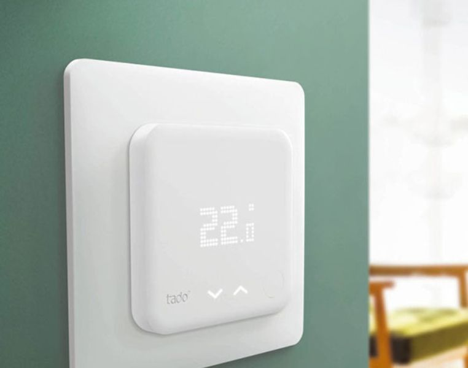

TadoJava (WIP)
This project is nothing more than a library for java to communicate with Tado's API. I decided to start this project because, while trying to integrate my Tado in my home automation app, I noticed that on the internet there was not much documentation about how to interface with Tado, so I thought it would be useful for someone to already have a JAR ready to integrate.
View Project